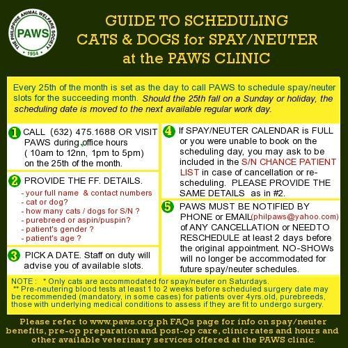
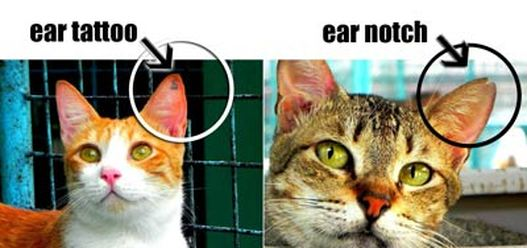

The PAWS Animal Rehabilitation Center (PARC) is an animal shelter operated by the Philippine Animal Welfare Society. Among its facilities, is a veterinary clinic equipped with tools and equipment needed to conduct examination, treatment and surgery. The clinic offers low-cost services and is open to the public and indigent pet owners on Mondays, Tuesdays, Thursdays, Fridays and Saturdays (M-T-Th-F-Sat) at 1:30 - 3:00 PM.
PARC veterinary clinic operates on the following objectives:
One of the priorities of PARC clinic is spaying and neutering to help curb the overpopulation of unwanted animals.
PARC CLINIC SCHEDULE:
The clinic offers low-cost services and is open to the public and indigent pet owners on
Mondays, Tuesdays, Thursdays, Fridays and Saturdays at 1:30 - 3:00 PM
| Spay and Neuter | |
| Female Cat | 1,000.00 |
| Female Dog | 1,500.00 (additional P500 for every 10 kg in excess of 15 kg bodyweight) |
| Male Cat | 700.00 |
| Male Dog | 1,000.00 (additional P500 for every 10 kg in excess of 15 kg body weight) |
For cats, a tattoo or a notch (v-shaped cut on the tip of the left ear - recommended for feral or outdoor cats) will be used as a mark of the procedure done.
An ear notch or a tattoo on a cat's ear allows us to physically identify if the cat has been spayed/neutered sparing it from unnecessary surgeries in the future.
*Additional P500 for purebred cats
*Additional P1,000 for purebred dogs
*Additional P300 for pregnant cats and dogs
*Additional P500 for male dog with abdominal castration (undescended testicle/s)
*Additional P1,000 for female dogs with pyometra
*Additional P300 for female cats with pyometra
*Additional P2,000 for use of gas anesthesia
Gas/inhalant anesthesia is recommended in certain instances, including but not limited to the following:
It becomes the maintenance anesthetic of choice because it facilitates faster anesthetic recovery soon after surgery.
General health status and fitness for surgery is assessed based on blood tests and a physical examination.
The blood tests (complete blood count, kidney and liver function tests) are highly recommended (often mandatory) for dogs/cats that are four years old and above; the tests are optional for younger animals that are apparently healthy and have no underlying medical condition.
Pre-neutering blood tests 500.00 (Cut-off time is at 3:00 PM, Results available on the next day)
| Consultation | 250.00 |
|---|---|
| Urinalysis | 100.00 |
| Skin Scrapping | 100.00 |
| Direct Fecal Smear | 100.00 |
| Deworming | 100.00 per 10kg body weight |
| Vaccination | |
|---|---|
| Rabies | 250.00 |
| 4-in-1 (cats) | 700.00 per shot |
| 5-in-1 (dogs/puppies) | 400.00 per shot |
| Bloodtesting | |
| CBC | 150.00 |
| BUN (kidney) | 150.00 |
| Creatinine (kidney) | 150.00 |
| SGPT (liver) | 150.00 |
| parvo test | 800.00 |
| distemper test | 750.00 |
| heartworm test | 700.00 |
*Blood testing cut-off time is at 3:00 PM. Results will be available the next day.
Please call 475-1688 for an appointment before you bring your pet for surgery. The clinic is open to the public for check-up (consultation) and vaccination on M- T-Th-F-Sat at 2:00 - 4:00 PM